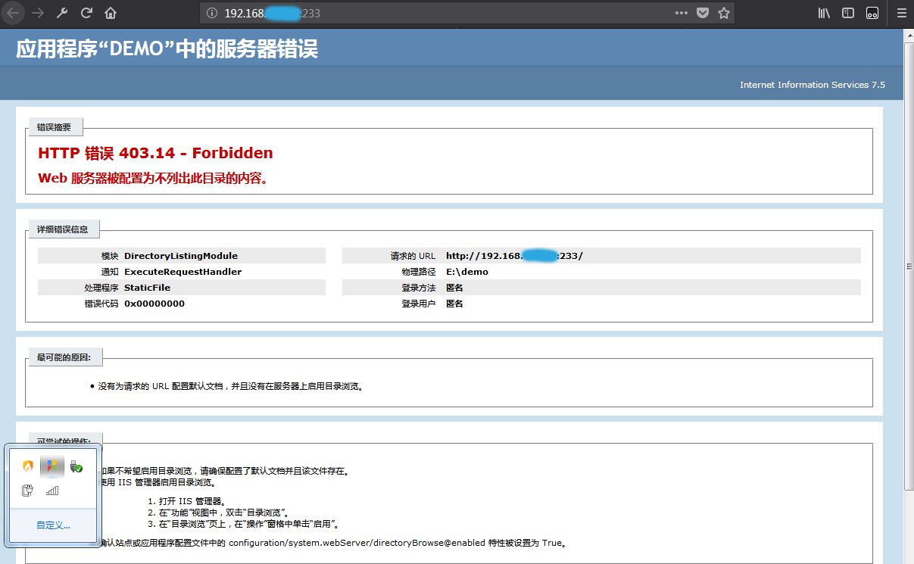
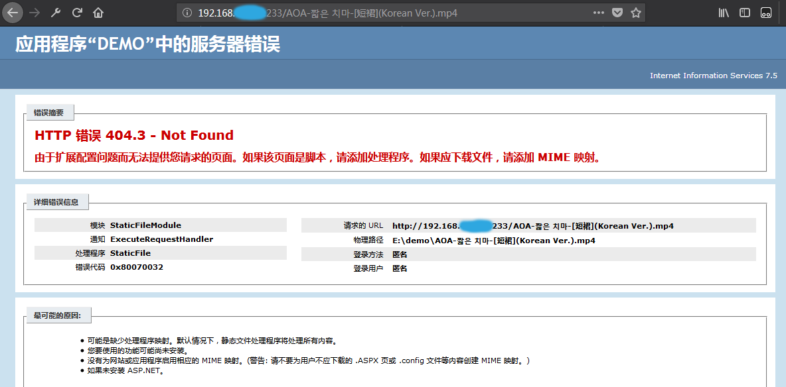
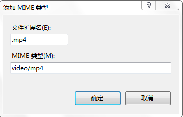
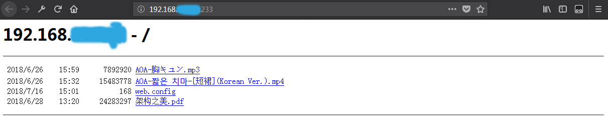
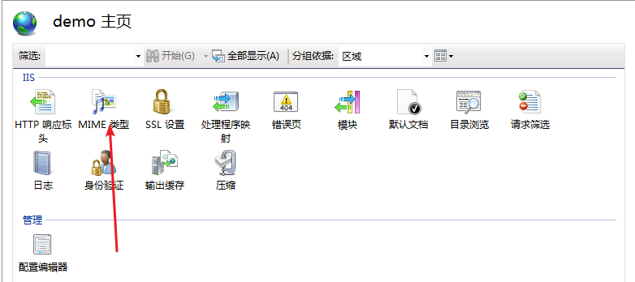
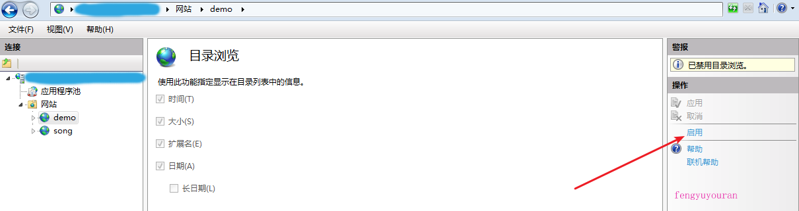

IIS搭建web服务器
前言
暑假在家里没网很难受，而如何在各终端间（安卓手机和win7电脑）传文件成了一个令人头疼的事，
特别是被一栋限速在50-120k之间时，它奶奶的，玩不过移动呀。
镇魔办呢
想办法呗，
现在的状况，解决方案有蓝牙传输（笔记本E42，没有蓝牙功能），IIS（以前玩过，但没有深究），软件（以前有个叫闪传的挺不错，后来，嗯，嗯。。）
那就IIS搞起来
首先什么是IIS
- Internet Information Services
- 互联网信息服务
- Web服务器、FTP服务器、NNTP服务器和SMTP服务器，分别用于网页浏览、文件传输、新闻服务和邮件发送
- 安全性受到诟病
如何用开启服务
- WIN+E打开文件管理器
- 单击“打开控制面板”选择“程序”，进入“程序”显示页面后，找到“程序和功能”一栏，点击“打开或关闭Windows功能”
- 进入到“打开或关闭Windows功能”页面后，找到”Internet信息服务“一栏，可以看到其前面的勾未勾上。
点击”Internet信息服务“前面的”+“将其自目录全部展开，分别将FTP、服务器、web管理工具、万维网服务目录下的所有选项进行勾选
- 最后点击”确定“即可
如何用
- Win+R输入"cmd",开启命令行
- 输入"ipconfig"查询本机IP192.168.43.112
- 回到"控制面板"，单击“系统和安全”，单击下方“管理工具”，双击“Internet信息服务（IIS）管理器”
- 展开左侧找到“网站”，右键“添加网站”，输入王战名称，物理路径单击确定即可
- 在同一WiFi内，在手机浏览器输入第一步查到的IP，即可访问电脑文件
一些要点
- 文件的权限打开
- mime类型
- 有pdf
有flac格式的音乐，毫无意外的，会返回404
添加到里面
- aoa的mv可以播放啦
美滋滋。





